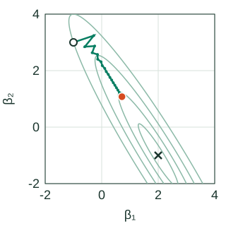
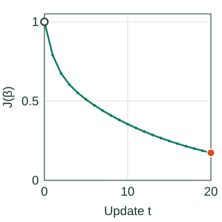

Gradient Descent for Linear Regression
Gradient descent fits a model by repeatedly computing which coefficient changes would reduce its objective, then taking a finite step in that direction. For linear least squares, every update can be checked exactly. There are no bad local minima; the practical questions are how far to step, how feature geometry affects progress, and when optimization is accurate enough.
For a moderate dense dataset, QR or SVD is usually a simpler route to the least-squares solution. Gradient methods are useful when data is too large to factor conveniently, arrives in batches, or is updated over time.
From Residuals to a Gradient
Let X contain n rows and p fitted columns, including an intercept column if the model uses one. With residual vector r = Xβ − y, use the normalized objective
$$J(\beta)=\frac{1}{2n}\|X\beta-y\|_2^2.$$The factor 1/2 cancels the 2 from differentiating a square. The factor 1/n makes this an average over rows. For coefficient j, multiply each residual by that row's feature value and average:
$$\frac{\partial J}{\partial\beta_j}=\frac1n\sum_{i=1}^n x_{ij}(x_i^\top\beta-y_i),\qquad \nabla J(\beta)=\frac1nX^\top(X\beta-y).$$Batch gradient descent uses this whole-data gradient:
The learning rate η must be positive. The negative gradient is a locally decreasing direction, but taking too large a finite step can increase the objective. The Hessian A = XᵀX/n is positive semidefinite; it is positive definite when X has full column rank.
Five Rows, Two Coefficients, One Exact Update
This original example fits y = β₁x₁ + β₂x₂. All three columns are centered. We omit the intercept here; if an intercept were included and initialized at zero, its gradient would stay zero on these rows. The responses are deliberately constructed as y = 2x₁ − x₂, so the unique least-squares solution is β* = (2, −1), with J(β*) = 0. This is an optimization demonstration, not evidence of predictive performance.
| Row | x₁ | x₂ | y |
|---|---|---|---|
| 1 | −2 | −1 | −3 |
| 2 | −1 | −1 | −1 |
| 3 | 0 | 0 | 0 |
| 4 | 1 | 1 | 1 |
| 5 | 2 | 1 | 3 |
Start at β⁽⁰⁾ = (−1, 3). Predictions are (−1, −2, 0, 2, 1), giving residuals r = (2, −1, 0, 1, −2). Therefore the initial objective and gradient are
∇J(β⁽⁰⁾) = (−6/5, −2/5) = (−1.2, −0.4).
With η = 0.6, subtracting 0.6 times this gradient gives β⁽¹⁾ = (−0.28, 3.24). Its residuals are (0.32, −1.96, 0, 1.96, −0.32), so J(β⁽¹⁾) = 0.7888. Notice that β₂ initially rises, even though its optimum is −1. A gradient step responds to the joint effect of correlated columns, not to the error of each coefficient in isolation.
Writing d = β − β* makes the whole objective explicit:
$$A=\frac{X^\top X}{5}=\begin{bmatrix}2&1.2\\1.2&0.8\end{bmatrix},\qquad J(\beta)=\tfrac12d^\top A d=d_1^2+1.2d_1d_2+0.4d_2^2.$$Every contour and update below belongs to this same quadratic. The coefficient axes use the same scale, and the plot window stays fixed throughout playback.
Follow the Parameters and the Objective Together
Coefficient space

Training objective

Coefficient space
Training objective
η = 0.6. Pale contours have J = 0.05, 0.2, 0.5 and 1, increasing outward. Contours extending beyond the displayed window are clipped.
Static view: all 20 updates are shown. The values below describe the orange endpoint.
- Coefficient β₁
- 0.7165
- Coefficient β₂
- 1.0766
- Objective J
- 0.173906
- Gradient, β₁
- −0.0751
- Gradient, β₂
- 0.1211
- Distance to β*
- 2.4413
Why This Learning Rate Converges Slowly
Subtract the optimality condition ∇J(β*) = 0 from the update. The parameter error obeys dt+1 = (I − ηA)dt. If vj is an eigenvector of A with eigenvalue λj, its error component is multiplied by one scalar:
$$v_j^\top d_{t+1}=(1-\eta\lambda_j)v_j^\top d_t.$$For a positive eigenvalue, this component contracts exactly when |1 − ηλj| < 1. To converge from every starting point in a full-rank problem, the fixed rate must satisfy 0 < η < 2/L, where L is the largest eigenvalue. At the upper boundary, a component can alternate forever without shrinking; above it, that component grows.
Here the eigenvalues are μ = 0.0583592 and L = 2.7416408. Thus 2/L = 0.7294902. At η = 0.6, the steep-direction multiplier is −0.6449845: its sign alternates, producing zigzags. The shallow-direction multiplier is 0.9649845: about 96.5% of that coefficient error remains after each step. The condition number L/μ is about 47.
| η | J after 1 update | J after 9 | J after 20 |
|---|---|---|---|
| 0.2 | 0.763200 | 0.585766 | 0.452428 |
| 0.6 | 0.788800 | 0.381054 | 0.173906 |
| 0.8 | 1.051200 | 6.960331 | 324.967330 |
The smaller rate wins after one update but loses after twenty. The rate 0.8 exceeds the stability boundary and eventually diverges. Selecting a rate from one attractive first step can be misleading.
Rank deficiency changes the conclusion. When a direction has λ = 0, its error multiplier is 1: the data cannot identify that component. Under a stable rate, gradient descent converges to a least-squares solution while preserving the initialization's null-space component. Zero initialization selects the minimum-norm solution. If X is entirely zero, the gradient is zero everywhere and there is no positive L defining a learning-rate bound.
Scaling and correlation are distinct. Standardizing training features can reduce curvature differences caused by units. It cannot generally remove near-dependence between columns. Here the two features are already of comparable size, yet their correlation creates a narrow valley. A better preconditioner may address that geometry; its transformation must be fixed from training data. These quadratic convergence ideas are developed in Boyd and Vandenberghe, Convex Optimization, Chapter 9.
Batch, Mini-Batch, SGD, and Online Updates
For a uniformly sampled batch B of size m, replace the full gradient by the average over its rows:
$$g_B(\beta)=\frac1m\sum_{i\in B}x_i(x_i^\top\beta-y_i).$$At a fixed β, uniform sampling gives an unbiased estimate of the full-data gradient. A one-row batch is stochastic gradient descent (SGD); using all rows is batch descent. Sampling unequal-probability rows without correcting their weights changes the target objective. After shuffling and sampling without replacement within an epoch, the next batch's gradient need not be conditionally unbiased given the earlier updates.
At this example's starting point, row 1 alone gives gradient (−4, −2), while row 2 gives (1, 1). The full gradient is (−1.2, −0.4). Row 2 even points in the opposite direction. The full-batch stability limit therefore does not automatically make every stochastic step decrease J.
| Method | What one update reads | Main consideration |
|---|---|---|
| Batch | All n rows | Deterministic progress; a complete scan per step |
| Mini-batch | m sampled rows | Noise/computation tradeoff; divide by the actual batch size |
| SGD | One sampled row | Cheap, noisy steps; order and schedule matter |
| Online | New observations as they arrive | Define whether to fit a stable population or track a changing one |
A constant SGD rate can leave a noise floor when per-row gradients remain nonzero at the optimum. That qualification matters: in this noiseless interpolating example, every row's gradient is zero at β*, so persistent gradient noise is not inevitable. Decaying schedules can reduce stochastic noise under suitable assumptions; a schedule alone does not repair biased batches or drift. Bottou, Curtis and Nocedal (2018) develops the sampling, step-size and convergence distinctions.
Momentum Adds a Second State
Momentum accumulates part of earlier updates. With momentum coefficient m and velocity v, a common convention is
$$v_{t+1}=m v_t-\eta\nabla J(\beta_t),\qquad \beta_{t+1}=\beta_t+v_{t+1}.$$With v₀ = 0 and m = 0, this is ordinary gradient descent. Positive momentum can build speed along a consistent direction, but it changes the stability conditions. The plain-gradient bound η < 2/L is not a complete stability test for the momentum system. Nesterov's variant evaluates the gradient at a look-ahead point:
$$v_{t+1}=m v_t-\eta\nabla J(\beta_t+m v_t),\qquad \beta_{t+1}=\beta_t+v_{t+1}.$$The displayed trajectory uses neither variant: it is plain batch descent. A resumed momentum run must restore both β and v, along with any schedule counter. Restoring only the coefficients changes its subsequent path.
Optimization Accuracy and Predictive Accuracy
Use multiple stopping signals: finite objective/gradient values, a maximum update budget, relative objective improvement, gradient norm, and coefficient movement. A nearly flat objective may still permit large coefficient error along a weak direction. For this positive-definite quadratic, ||∇J||/μ bounds the distance to β* from above, so a small μ makes a seemingly small gradient less reassuring.
Compare a small implementation against QR/SVD on the same training rows. Independently check a gradient using central finite differences. Then evaluate predictions on an appropriate held-out split. A converged training objective does not establish a correct model shape, valid uncertainty estimates, or useful generalization.
If validation performance chooses the stopping iteration, that iteration is a tuned hyperparameter. Fit scaling and other learned transformations within training folds, keep temporal or grouped split boundaries intact, and reserve the final test set for the selected procedure. Reproducible model artifacts include feature order, scaler values, intercept policy, objective normalization, initialization, batch order/seed, rate schedule, stopping tolerances and convergence status.
Reproduce the Numbers
The following NumPy code computes the gradient from the rows, checks the unique solution, and compares the three rates. The figure generator additionally verifies the spectral recurrence and every contour vertex against the objective.
Show the complete numerical check
import numpy as np
X = np.array([[-2., -1.], [-1., -1.], [0., 0.],
[1., 1.], [2., 1.]])
y = np.array([-3., -1., 0., 1., 3.])
beta_star = np.linalg.lstsq(X, y, rcond=None)[0]
A = X.T @ X / len(y)
assert np.allclose(beta_star, [2., -1.])
print("eigenvalues:", np.linalg.eigvalsh(A))
for eta in [0.2, 0.6, 0.8]:
beta = np.array([-1., 3.])
for t in range(21):
residual = X @ beta - y
J = residual @ residual / (2 * len(y))
gradient = X.T @ residual / len(y)
if t in [0, 1, 2, 9, 20]:
print(eta, t, beta, J, gradient)
if eta == 0.6 and t == 1:
assert np.allclose(beta, [-0.28, 3.24])
assert np.isclose(J, 0.7888)
if eta == 0.6 and t == 20:
assert np.isclose(J, 0.17390643477409634)
beta -= eta * gradient
For implementation details, continue to the C++ gradient-descent guide. The numerical-solvers chapter explains the direct least-squares reference used for verification.